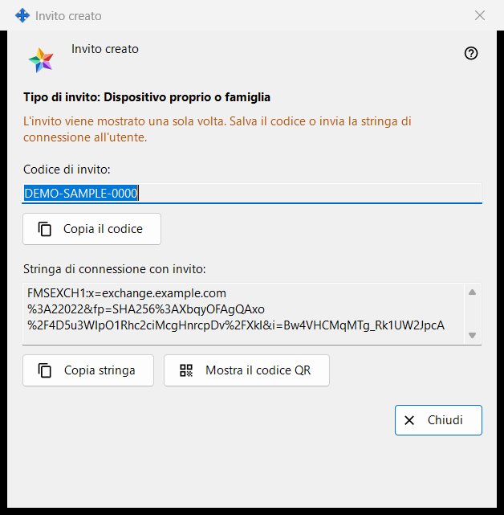
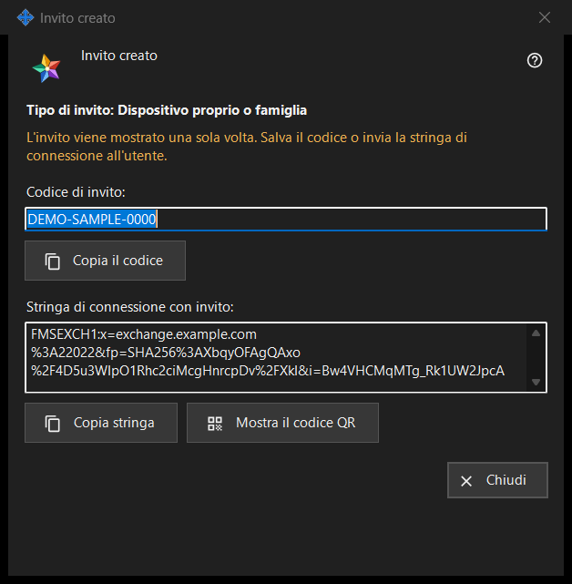

Invito creato
Scopo
Questa finestra mostra un nuovo invito una sola volta, subito dopo «Crea» nella finestra «Crea invito». Contiene il codice monouso e, quando il programma del server di scambio riesce a crearla, una stringa di connessione che contiene già il codice.


In questo ordine
- Controlla la riga «Tipo di invito: ..».
- Premi «Copia il codice», oppure «Copia stringa» per la stringa con l'invito, oppure «Mostra il codice QR».
- Consegna il risultato alla persona tramite un canale di cui ti fidi.
- Premi «Chiudi». Lo stesso codice non viene mostrato di nuovo.
Gli elementi
Tipo e avviso
La riga in grassetto «Tipo di invito: Dispositivo proprio o famiglia» indica il tipo scelto. La riga nel colore di avviso dice «L'invito viene mostrato una sola volta. Salva il codice o invia la stringa di connessione all'utente.» Quando la finestra si chiude, il codice e la stringa vengono cancellati da essa. Se uno dei due va perso, revoca l'invito nell'elenco e creane uno nuovo.
Codice di invito
«Codice di invito:» mostra il codice in un campo di sola lettura. «Copia il codice» lo copia come segreto, senza passare dalla cronologia degli appunti di Windows (Win+V) né dagli appunti cloud, e la riga sotto dice «Codice di invito copiato negli appunti.» oppure «Impossibile copiare il codice negli appunti.»
Stringa di connessione con l'invito
«Stringa di connessione con invito:» compare solo quando la stringa ha potuto essere creata. Indica il server e contiene il codice, quindi trattala come il codice: anche «Copia stringa» la copia come segreto. Non contiene la password del tuo account.
Codice QR
«Mostra il codice QR» apre un'immagine della stringa con l'invito. Chiunque la veda può usare l'invito, quindi mostrala solo alla persona a cui è destinata. Se l'immagine non può essere creata, la riga dice «Il QR code non è disponibile al momento.»
Cosa fa l'altra persona
Nella finestra dell'account di scambio («Accedi..») la persona incolla la stringa con «Incolla» oppure apre un file salvato. Una stringa che contiene un invito porta la finestra alla registrazione: la persona sceglie un login, inserisce due volte una password e preme «Crea l'account». Un invito errato o già usato, o un login già occupato, viene rifiutato con un messaggio.
Chiudi
«Chiudi» termina la finestra e cancella da essa il codice e la stringa. Qui non viene salvato nient'altro.
Impostazioni del gestore · Impostazioni condivisione SFTP · Impostazioni server di scambio